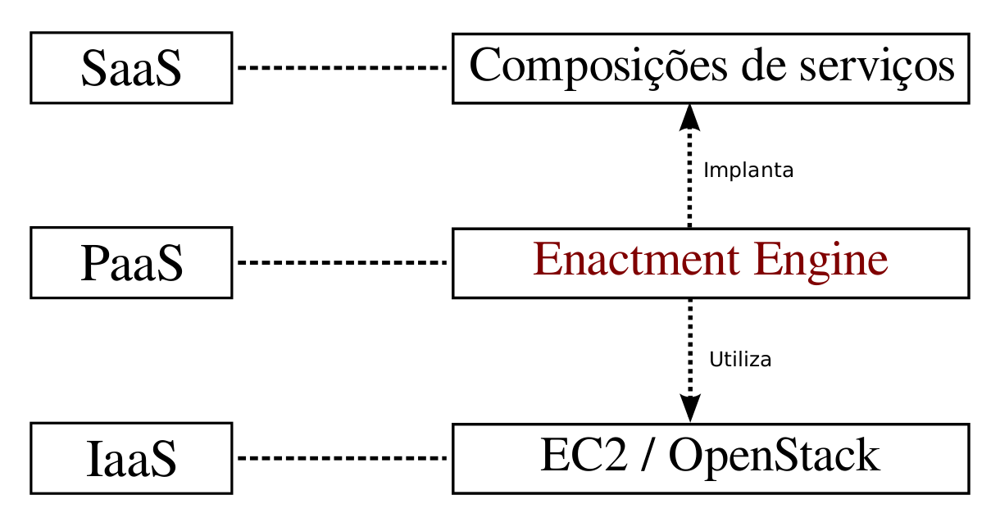
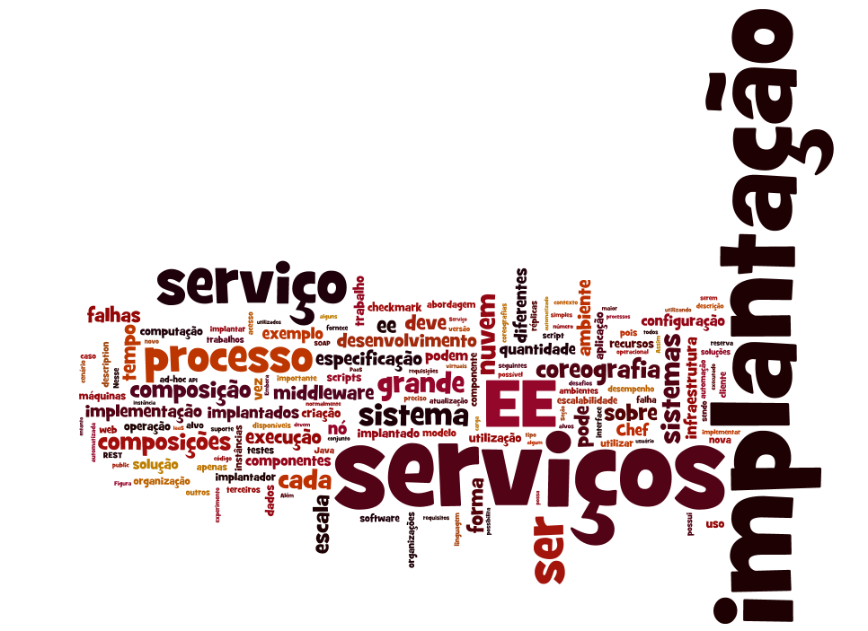

Data: 26/05/14 (segunda-feira), às 15h.
Local: Auditório Antonio Gilioli, 2o andar do Bloco A (mapa), IME-USP (mapa).
A implantação de composições de serviços web de grande escala apresentam vários desafios, tais como falhas corriqueiras na infraestrutura, heterogeneidade tecnológica, distribuição do sistema por diferentes organizações e atualização frequente dos serviços em operação. Nesta dissertação, estudamos como uma implantação automatizada baseada em middleware pode auxiliar na superação de tais desafios. Para isso, desenvolvemos o CHOReOS Enactment Engine, um sistema de middleware que possibilita a implantação distribuída e automatizada de composições de serviços web em uma infraestrutura virtualizada, operando no modelo de computação em nuvem denominado Plataforma como um Serviço. O middleware desenvolvido é avaliado qualitativamente em comparação a abordagens de implantação ad-hoc e quantitativamente pela sua escalabilidade em relação ao tempo de implantação das composições de serviços.
The deployment of large-scale service compositions presents several challenges, such as infrastructure failures, technological heterogeneity, distributions across different organizations, and continuous services updating. In this master thesis, we study how the automated deployed supported by middleware can help in overcoming such challenges. For this purpose, we developed the CHOReOS Enactment Engine, a middleware system that enables the distributed and automated deployment of web service compositions in a virtualized infrastructure, operating in the cloud computing model known as Platform as a Service. The developed middleware is evaluated qualitatively by comparing it with ad-hoc deployment solutions, and it is also evaluated quantitatively by its scalability regarding the deployment time of service compositions.
Titulares
Suplentes


{kind=link}